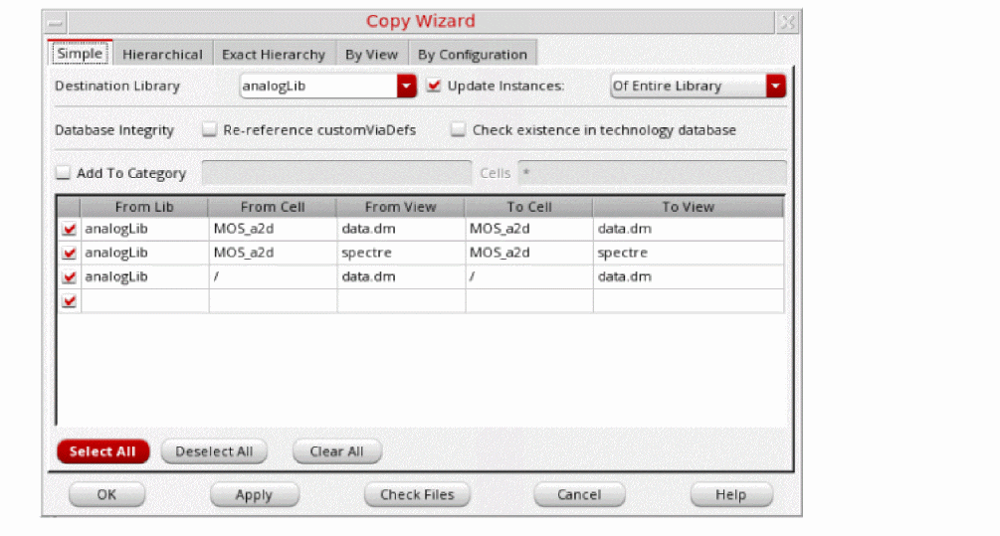

Performing a Simple Copy Using the Copy Wizard
To perform a simple copy operation, follow these steps:
- In the Library Manager window, select a library, cell, or view.
-
Choose Edit – Copy Wizard.
The Copy Wizard form appears. The default copy option is Simple.- If you selected only a library, all cells and views associated with this library appear in the Copy Wizard window.
- If you selected a library and a cell, all views associated with this library and cell appear in the Copy Wizard window.
- If you selected a library, cell, and view, information for the selected cellview only appears in the Copy Wizard window.
-
Deselect the check box to the left of any item you do not want to include in the copy list.
You can click Select All to select all check boxes or Deselect All to deselect all check boxes. -
Change one or more of the following to specify your copy operation:
-
In the Destination Library field, type or select a new destination library name to copy the selected cellviews to a different library.
If the destination library does not already exist, Library Manager creates it in your working directory during the copy procedure. - In the To Cell list box, edit the contents to copy the selected cellviews to another name.
- In the To View list box, edit the contents to copy the selected views to another name.
-
In the Destination Library field, type or select a new destination library name to copy the selected cellviews to a different library.
- Select the Update Instances check box and select the required option from the drop-down list.
- Select the options in the Database Integrity field if you want to update technology data in the destination library after the copy command is completed.
- Click Check Files to preview any copy problems.
- Click OK.
The Library Manager performs the specified copy operation.
Related Topics
Copy Wizard Form (Simple Copy)
Adding a Copied Cell to a Category
Editing Text in the Copy Wizard
Return to top